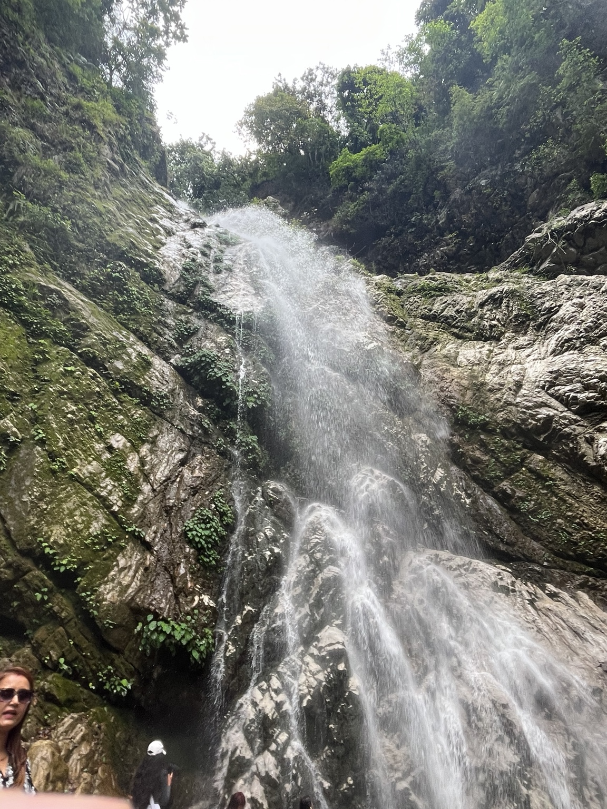

KarkiVerse
☰
Home
My Life
Games
Voice
KarkiAI
My Life
Places and moments from around Dharan. Tap a photo to see it full size.
A view worth remembering
Along the way
Dharan clock tower
Into the green
A walk through nature
A bridge between the hills

Waterfall
The open road
←
→
✕